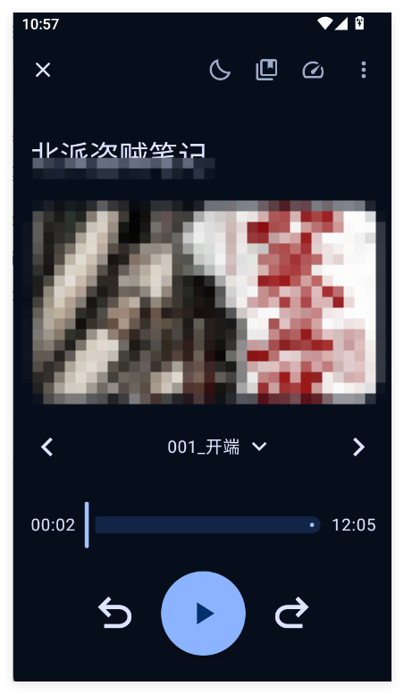
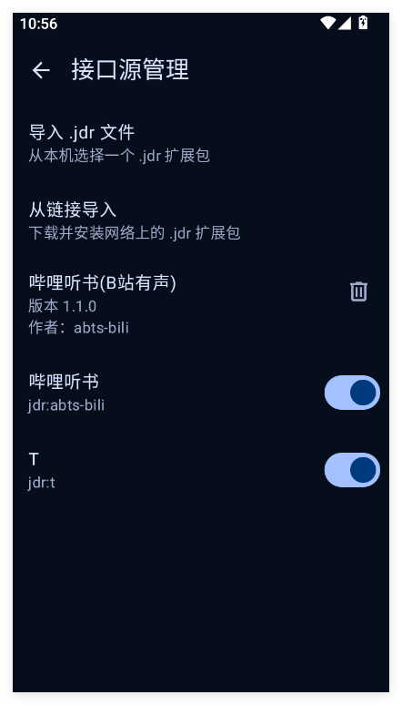

市面上的播放器大多是音乐播放器顺便能放长音频，Timbre 反过来：每一处细节都围绕一口气听几小时的习惯。
每本书、每一集、每一秒的进度都记得。暂停自动回退几秒帮你接上上下文；换设备也不丢。
自然排序让第 2 集排在第 10 集前面；1913 集的书也能边导入边听，解析完第一集就能开播。
每本书独立设置。片头每集只跳一次，暂停回退不打架；最后一集正常播完，不会被“跳没了”。
目录树直接浏览导入，播放边缓存、章节自动预取、WLAN 下自动刷新；断点续播对远程书同样生效。
音频文件夹里的图片优先于内嵌封面，多张随机选一张；一张图都没有时按书名生成，导入即出封面。
渐弱淡出、章节结束停止、摇一摇续命、定时自动开启——睡前听书的完整方案。
.jdr 接口源包把「搜索 / 章节 / 播放直链」全部交给本机完成，请求从你自己的 IP 直连源站，不经任何中间服务器。
在 App 内选择「从链接导入」，粘贴这条直链：
https://raw.githubusercontent.com/cq10086123/Timbre/refs/heads/main/samples/Timbre.jdr
⚠ 注意：部分接口源有请求限制，请勿频繁切换；部分接口支持缓存，因接口而异。